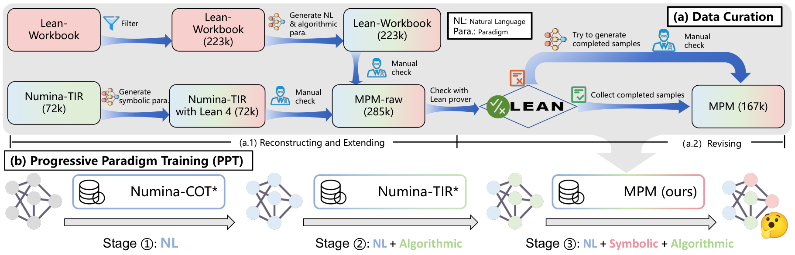
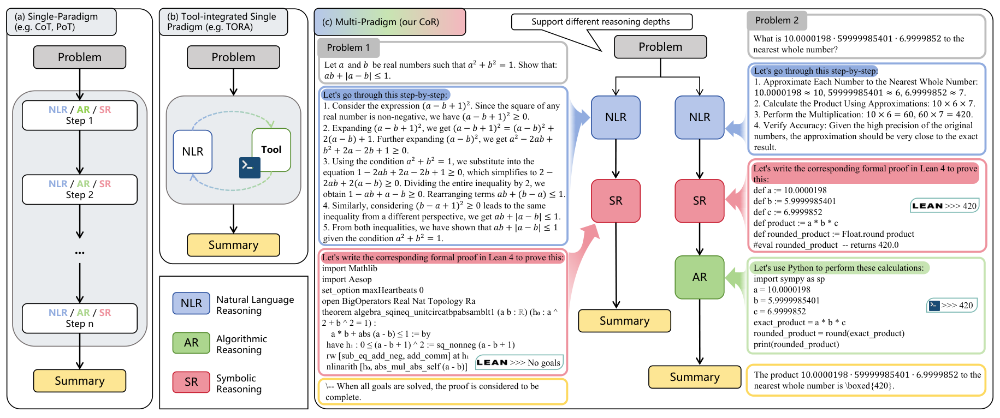
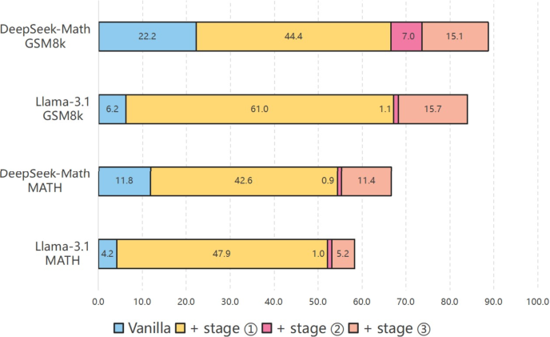

Uses Lean 4 as the symbolic reasoning paradigm, verifying generated proofs to build training data and evaluating theorem proving on miniF2F in Lean 4.
Abstract
Large Language Models (LLMs) have made notable progress in mathematical reasoning, yet often rely on single-paradigm reasoning, limiting their effectiveness across diverse tasks. We introduce Chain-of-Reasoning (CoR), a novel unified framework integrating multiple reasoning paradigms–Natural Language Reasoning (NLR), Algorithmic Reasoning (AR), and Symbolic Reasoning (SR)–to enable synergistic collaboration. CoR generates multiple potential answers via different reasoning paradigms and synthesizes them into a coherent final solution. We propose a Progressive Paradigm Training (PPT) strategy for models to progressively master these paradigms, leading to CoR-Math-7B. Experimental results demonstrate that CoR-Math-7B significantly outperforms current SOTA models, achieving up to a 41.0% absolute improvement over GPT-4o in theorem proving and a 15.0% improvement over RL-based methods on the MATH benchmark in arithmetic tasks. These results show the enhanced mathematical comprehension ability of our model, enabling zero-shot generalization across tasks.
Problem
LLM mathematical reasoners are usually trained on a single reasoning paradigm: natural language, code, or formal symbolic proof. As a result they perform unevenly across arithmetic computation and theorem proving tasks.
Approach
Chain-of-Reasoning (CoR) has a model generate solutions sequentially in natural language reasoning, symbolic reasoning (Lean 4 proofs checked by the Lean prover) and algorithmic reasoning (Python), then summarize them into a final answer. A Multi-Paradigm Math dataset is built from Numina-TIR and Lean-Workbook, with Lean verification used to filter and revise proof paths. Progressive Paradigm Training adds paradigms in stages to fine-tune DeepSeekMath-7B-Base, producing CoR-Math-7B.

Figure 3: An overview of (a) the Multi-Paradigm Math (MPM) dataset construction process, involving reconstruction, extension, and theorem prover verification, and (b) the Progressive Paradigm Training (PPT) method, where the model is trained with increasing reasoning paradigms in stages.

Figure 2: The reasoning process under different paradigms: (a) In single-paradigm reasoning, each reasoning step relies on the same knowledge medium, such as Natural Language (NL), algorithms, or symbols. (b) In tool-integrated single-paradigm, NL is used for reasoning, while code assists in solving specific sub-problems. After obtaining the execution results, the reasoning continues using NL. (c)
Results
CoR-Math-7B reaches 66.7% on MATH and 88.7% on GSM8K zero-shot. On miniF2F-test (Lean 4) it scores 52.9% at a 128×1 sample budget and 66.0% at 128×128, exceeding GPT-4o by 41.0 points absolute. Ablations show gains from each training stage and from the NLR→SR→AR ordering.

Figure 4: An evaluation of the effectiveness of the PPT strategy. We present the zero-shot Pass@1 results on the MATH and GSM8k benchmarks across three cumulative stages of the PPT strategy. The results highlight the PPT strategy’s cumulative effectiveness, showing increased performance with each progressive stage.
Model
GSM8k@1
MATH@1
miniF2F@128
DSM + NLR
33.9
27.8
-
DSM + AR
75.8
37.6
-
DSM + SR
-
-
44.3
DSM + CoR
88.7
66.7
52.9
Zero-shot results of single- vs multi-paradigm fine-tuning on DeepSeekMath-7B-Base